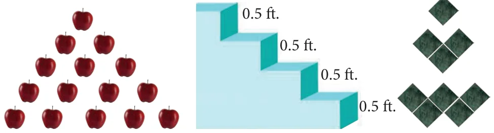
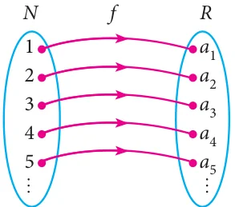

Consider the following pictures.

There is some pattern or arrangement in these pictures. In the first picture, the first row contains one apple, the second row contains two apples and in the third row there are three apples etc… The number of apples in each of the rows are 1, 2, 3, …
In the second picture each step have 0.5 feet height. The total height of the steps from the base are 0.5 feet, 1 feet, 1.5 feet,… In the third picture one square, 3 squares, 5 squares, … These numbers belong to category called “Sequences”.
Definition
A real valued sequence is a function defined on the set of natural numbers and taking real values.
Each element in the sequence is called a term of the sequence. The element in the first position is called the first term of the sequence. The element in the second position is called second term of the sequence and so on.
If the \(n^{th}\) term is denoted by \(a_n\), then \(a_1\) is the first term, \(a_2\) is the second term, and so on. A sequence can be written as \(a_1, a_2, a_3, \ldots, a_n, \ldots\)
Illustration
- \(1, 3, 5, 7, \ldots\) is a sequence with general term \(a_n = 2n - 1\). When we put \(n = 1, 2, 3, \ldots\), we get \(a_1 = 1,\ a_2 = 3,\ a_3 = 5,\ a_4 = 7, \ldots\)
- \(\dfrac{1}{2}, \dfrac{1}{3}, \dfrac{1}{4}, \dfrac{1}{5}, \ldots\) is a sequence with general term \(\dfrac{1}{n+1}\). When we put \(n = 1, 2, 3, \ldots\) we get \(a_1 = \dfrac{1}{2},\ a_2 = \dfrac{1}{3},\ a_3 = \dfrac{1}{4},\ a_4 = \dfrac{1}{5}, \ldots\)
If the number of elements in a sequence is finite then it is called a Finite sequence. If the number of elements in a sequence is infinite then it is called an Infinite sequence.
Sequence as a Function

A sequence can be considered as a function defined on the set of natural numbers \(\mathbb{N}\). In particular, a sequence is a function \(f : \mathbb{N} \to \mathbb{R}\), where \(\mathbb{R}\) is the set of all real numbers.
If the sequence is of the form \(a_1, a_2, a_3, \ldots\) then we can associate the function to the sequence \(a_1, a_2, a_3, \ldots\) by \(f(k) = a_k,\ k = 1, 2, 3, \ldots\)
Progress Check
- Fill in the blanks for the following sequences
- \(7, 13, 19, \underline{\qquad}, \ldots\)
- \(2, \underline{\qquad}, 10, 17, 26, \ldots\)
- \(1000, 100, 10, 1, \underline{\qquad}, \ldots\)
- A sequence is a function defined on the set of \(\underline{\qquad}\).
- The \(n^{th}\) term of the sequence \(0, 2, 6, 12, 20, \ldots\) can be expressed as \(\underline{\qquad}\).
- Say True or False
- All sequences are functions
- All functions are sequences.
Note
Though all the sequences are functions, not all the functions are sequences.
Example 2.19
Find the next three terms of the sequences
(i) \(\dfrac{1}{2}, \dfrac{1}{6}, \dfrac{1}{10}, \dfrac{1}{14}, \ldots\) (ii) \(5, 2, -1, -4, \ldots\) (iii) \(1, 0.1, 0.01, \ldots\)
Solution
\(\dfrac{1}{2},\ \dfrac{1}{6},\ \dfrac{1}{10},\ \dfrac{1}{14},\ \ldots \qquad \text{(denominators } 2 \xrightarrow{+4} 6 \xrightarrow{+4} 10 \xrightarrow{+4} 14\text{)}\)
In the above sequence the numerators are same and the denominator is increased by 4.
So the next three terms are
\(a_5 = \dfrac{1}{14 + 4} = \dfrac{1}{18}\)
\(a_6 = \dfrac{1}{18 + 4} = \dfrac{1}{22}\)
\(a_7 = \dfrac{1}{22 + 4} = \dfrac{1}{26}\)
\(5 \xrightarrow{-3} 2 \xrightarrow{-3} -1 \xrightarrow{-3} -4, \ldots\)
Here each term is decreased by 3. So the next three terms are \(-7, -10, -13\).
\(1 \xrightarrow{\div 10} 0.1 \xrightarrow{\div 10} 0.01, \ldots\)
Here each term is divided by 10. Hence, the next three terms are
\(a_4 = \dfrac{0.01}{10} = 0.001\)
\(a_5 = \dfrac{0.001}{10} = 0.0001\)
\(a_6 = \dfrac{0.0001}{10} = 0.00001\)
Example 2.20
Find the general term for the following sequences
(i) \(3, 6, 9, \ldots\) (ii) \(\dfrac{1}{2}, \dfrac{2}{3}, \dfrac{3}{4}, \ldots\) (iii) \(5, -25, 125, \ldots\)
Solution
- \(3, 6, 9, \ldots\)
Here the terms are multiples of 3. So the general term is
\(a_n = 3n,\)
- \(\dfrac{1}{2}, \dfrac{2}{3}, \dfrac{3}{4}, \ldots\)
\(a_1 = \dfrac{1}{2};\ a_2 = \dfrac{2}{3};\ a_3 = \dfrac{3}{4}\)
We see that the numerator of \(n^{th}\) term is \(n\), and the denominator is one more than the numerator. Hence, \(a_n = \dfrac{n}{n+1},\ n \in \mathbb{N}\)
- \(5, -25, 125, \ldots\)
The terms of the sequence have \(+\) and \(-\) sign alternatively and also they are in powers of 5.
So the general term \(a_n = (-1)^{n+1} 5^n,\ n \in \mathbb{N}\)
Example 2.21
The general term of a sequence is defined as
\(a_n = \begin{cases} n(n+3); & n \in \mathbb{N} \text{ is odd} \\ n^2 + 1; & n \in \mathbb{N} \text{ is even} \end{cases}\)
Find the eleventh and eighteenth terms.
Solution
To find \(a_{11}\), since 11 is odd, we put \(n = 11\) in \(a_n = n(n+3)\)
Thus, the eleventh term \(\quad a_{11} = 11(11 + 3) = 154\).
To find \(a_{18}\), since 18 is even, we put \(n = 18\) in \(a_n = n^2 + 1\)
Thus, the eighteenth term \(\quad a_{18} = 18^2 + 1 = 325\).
Example 2.22
Find the first five terms of the following sequence.
\(a_1 = 1,\ a_2 = 1,\ a_n = \dfrac{a_{n-1}}{a_{n-2} + 3};\ n \ge 3,\ n \in \mathbb{N}\)
Solution
The first two terms of this sequence are given by \(a_1 = 1,\ a_2 = 1\). The third term \(a_3\) depends on the first and second terms.
\(a_3 = \dfrac{a_{3-1}}{a_{3-2} + 3} = \dfrac{a_2}{a_1 + 3} = \dfrac{1}{1 + 3} = \dfrac{1}{4}\)
Similarly the fourth term \(a_4\) depends upon \(a_2\) and \(a_3\).
\(a_4 = \dfrac{a_{4-1}}{a_{4-2} + 3} = \dfrac{a_3}{a_2 + 3} = \dfrac{\frac{1}{4}}{1 + 3} = \dfrac{\frac{1}{4}}{4} = \dfrac{1}{4} \times \dfrac{1}{4} = \dfrac{1}{16}\)
In the same way, the fifth term \(a_5\) can be calculated as
\(a_5 = \dfrac{a_{5-1}}{a_{5-2} + 3} = \dfrac{a_4}{a_3 + 3} = \dfrac{\frac{1}{16}}{\frac{1}{4} + 3} = \dfrac{1}{16} \times \dfrac{4}{13} = \dfrac{1}{52}\)
Therefore, the first five terms of the sequence are \(1, 1, \dfrac{1}{4}, \dfrac{1}{16}\) and \(\dfrac{1}{52}\)